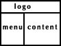

Учебник по Html для чайников. Фреймы.Ступенька 38-ая.В этой главе мы разберемся, как расположить документы в окне следующим образом  или В предыдущей главе я говорила, что не можем использовать атрибуты rows и cols одновременно применительно к одному тэгу <frameset>. Тогда как же расположить наши документы в окне так, как указано на рисунках? Просто, ввести в наш фрейм документ еще одного господина <frameset>, но обо всем по порядку. Начнем с первого рисунка: Каким образом мы будем делить окно? - На ряды. В первом ряду у нас будет располагаться logo.html, а второй ряд мы поделим на два столбца, в которых будут располагаться документы menu.html и content.html.
Принцип построения ясен, только вот как обозначить ряд, разбитый на два столбца? Как я уже говорила, тут нам поможет господин Frameset.
Для тех, кто не уследил за движениями моих рук, поясняю. Первый ряд мы оформили как положено, при помощи тэга frame. Во втором ряду на сцену выгодит тэг <frameset></frameset>.
С помощью атрибута cols тэга <frameset></frameset> мы делим второй ряд на два столбца (первый шириной 150 пикселов, второй по ширине занимает все оставшееся пространство). А тэги <frame>, которые содержит <frameset></frameset>, определяют, какие документы будут показаны загружены в вертикальных фреймах во втором ряду (menu.html и content.html). Теперь разберем вариант, изображенный на втором рисунке: Здесь мы будем делить окно на столбцы. Второй столбец будет содержать в себе документ content.html (содержание), а первый столбец мы разобьем на два ряда, и поместим в них документы logo.html и menu.html.
Вот так. Ничего сложного здесь нет:)
Однако, если у вас возникли трудности с освоением фреймов, и вы считаете, что вам нужны более подробные уроки и более простое повествование, то я советую вам обратиться к учебнику по фреймам Джо Барта, который мы перевели для вас, и который вы можете найти на нашем сайте. А мы же с теми, у кого не возникает проблем с предметом, перешагнем на следующую ступеньку, чтобы узнать, что еще можно сделать с фреймами.
<<< Ступенька 37-ая: Назад | Далее: Ступенька 39-ая >>>
|
|||||||||||||||||